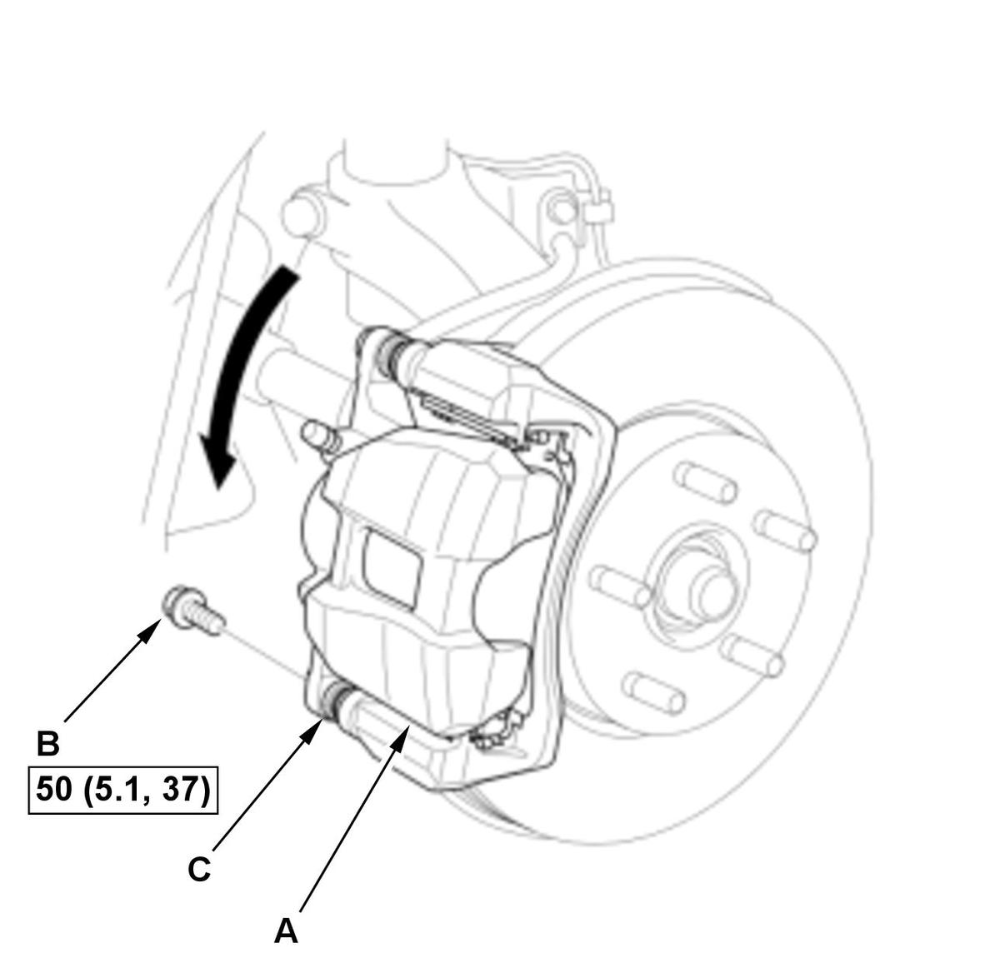

Front Brake Pad Removal and Installation (Si) (2017 2018 2019 2020 2021): Installation
NOTE:
- How to read the torque specifications .
- Review the Service Precautions before doing repairs or service .
- Brake Pad - Install
1. Install the brake caliper piston compressor (A) on the caliper body (B). 2. Press in the piston with the brake caliper piston compressor.
3. Remove the brake caliper piston compressor.
4. Apply a thin coat of M-77 assembly paste (P/N 08798- 9010) to the retainer mating surface of the caliper bracket (indicated by the arrows). 5. Install the pad retainers (A).
6. Wipe off the excess assembly paste from the retainers. Keep the assembly paste away from the brake disc and the brake pads.
7. Apply a thin coat of M-77 assembly paste (P/N 08798- 9010) to the pad side of the shims (B), the back of the brake pads (C), and the other areas indicated by the arrows.
8. Wipe off the excess assembly paste from the pad shims and brake pads friction material. Keep grease and assembly paste away from the brake disc and brake pads. Contaminated brake disc or brake pads reduce stopping ability.
9. Install the brake pads and pad shims correctly, with the wear indicator (D) on the upper inside position.
NOTE: If you are reusing the brake pads, always reinstall the brake pads in their original positions to prevent a temporary loss of braking efficiency.
10. Install the pad return spring (E).

Courtesy of HONDA, U.S.A., INC.11. Pivot the caliper body (A) down into position. 12. Install the flange bolt (B), and tighten it to the specified torque while holding the caliper pin (C).
NOTE: Be careful not to damage the pin boot.
13. Press the brake pedal several times to make sure the brakes work.
NOTE: Engagement may require a greater pedal stroke immediately after the brake pads have been replaced as a set. Several applications of the brake pedal will restore the normal pedal stroke.
- Front Wheels - Install
- Brake Fluid - Refill
1. Add brake fluid as needed.